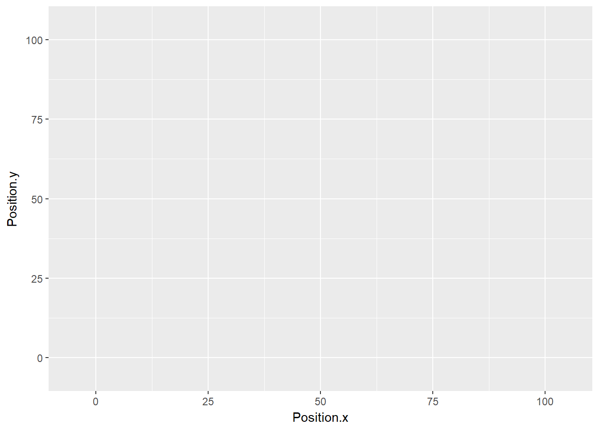

Loading single experimet the first time
library(brainvr.R)
#> Loading required package: data.table
#> Loading required package: navr
dir_path <- system.file("extdata", package = "brainvr.R")
obj <- load_experiment(dir_path)
#> [1] "Returning only one experiment log."
#> [1] "Loading preprocessed player log_player_.*17-41-52-03-12-2017"
#>
Read 98.3% of 132213 rows
Read 132213 rows and 20 (of 20) columns from 0.029 GB file in 00:00:03#Preprocessing and saving dta
if(!is_player_preprocessed(obj$data$player_log)){
obj$data$player_log <- preprocess_player_log(obj$data$player_log)
save_preprocessed_player(dir_path, obj$data$player_log, obj$timestamp)
}The next time you are loading the log, you will load the processed automatically
Loading processed player log
obj <- load_experiment(dir_path)
#> [1] "Returning only one experiment log."
#> [1] "Loading preprocessed player log_player_.*17-41-52-03-12-2017"IN case we need a new offset, we can do that as well
obj <- translate_positions(obj, c(33.5, 0, 47.75))
obj <- mirror_axes(obj)Plotting player path
#set constraints
obj$map_limits <- list(x = c(-5, 105), y = c(-5, 105))
plot_trial_path(obj, 1)